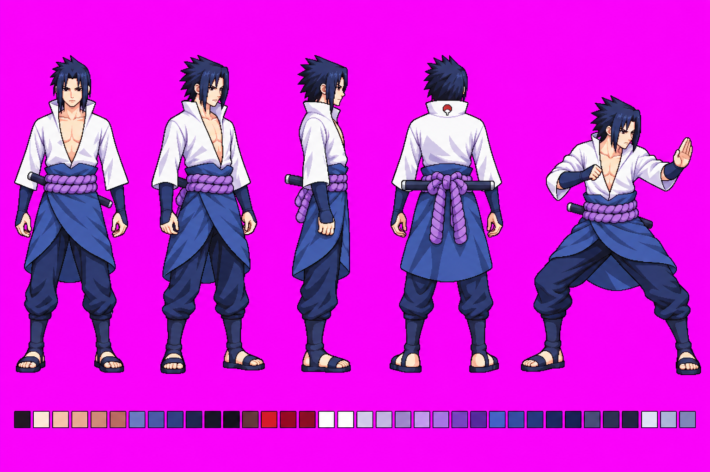
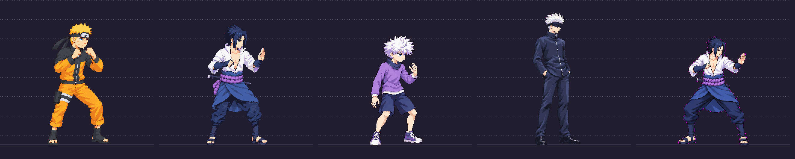

Review the smaller-head direction before any idle or animation redraw. Approval command: approve sasuke model_sheet v02


Best of 3 built-in generations. Identity, five views and sheathed sword retained. Manual front landmarks: skull crown about y140, chin234, soles808: skeleton668px, head94px, ratio7.11 (uncertainty about +/-0.3 heads). Measured normalization200/668=0.2994 instead requested0.5: generator missed400px source skeleton. Candidate stance height181px because of deeper knee bend; SBR0.430, MWR0.65; DR0.30 printed by lineup is inherited class metadata, NOT independently measured candidate DR. Raw non-background figure area124398 RGB colors exceeds48; near-magenta fringe visible. No claim of exact8% change or pixel-clean technical pass. Recommend review proportions, withhold final production approval until palette/source-scale caveats are accepted or corrected. Model-only: strip scale gate not applicable; fixed approved references and game sprites unchanged.